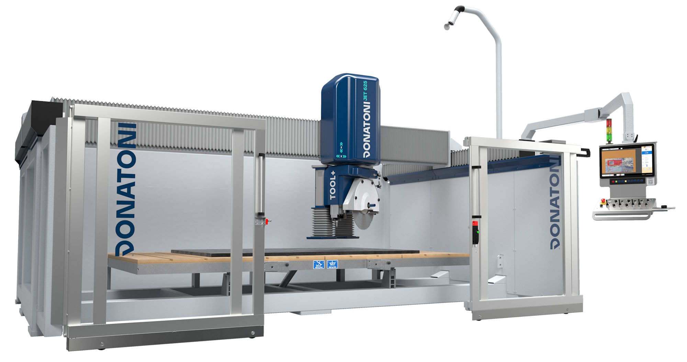
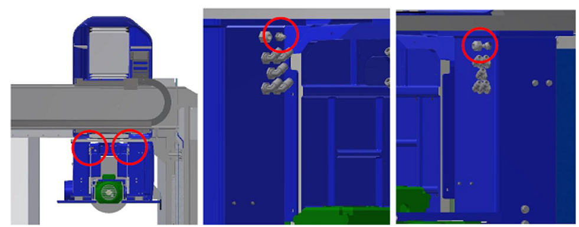
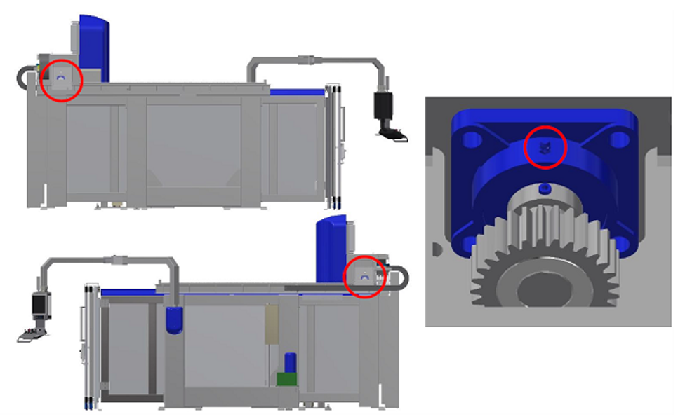
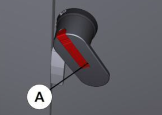
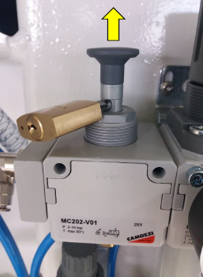
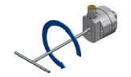
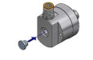
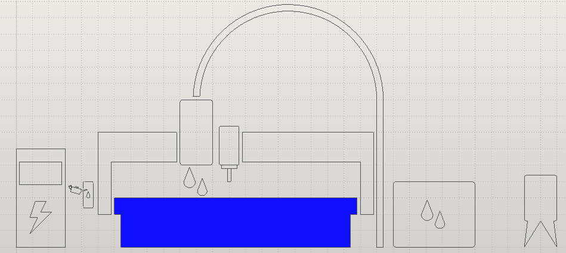
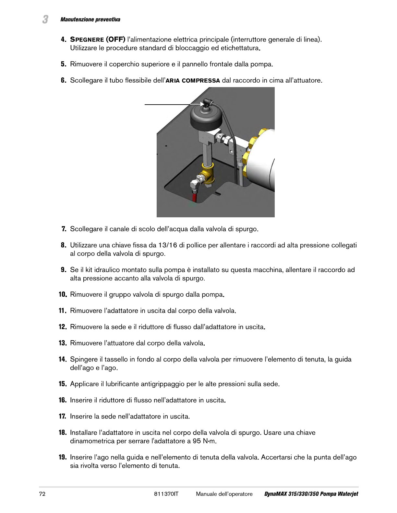
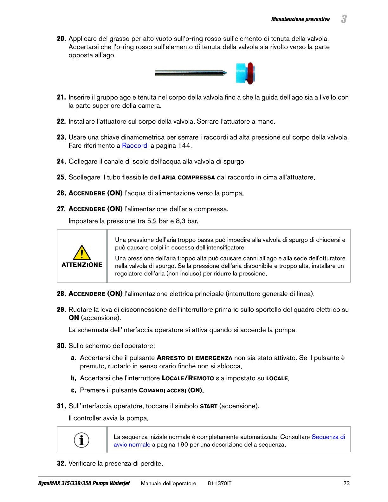

Maintenance IT-IT Home
- FRESE STANDARD
- TABELLA COMPARATIVA DEI LUBRIFICANTI
- MN0001 TEST DEL CIRCUITO DI EMERGENZA
- MN0002 MANUTENZIONE MENSILE POMPA DEL VUOTO
- MN0003 TEST FUNZIONAMENTO SEGNALE LUMINOSO
- MN0004 INGRASSAGGIO GUIDE LINEARI SISTEMA MOVE
- MN0005 INGRASSAGGIO CUSCINETTO CHIOCCIOLA ASSE Z
- MN0006 INGRASSAGGIO CUSCINETTI ALBERO TRASMISSIONE PONTE ASSE Y
- MN0007 CONTROLLO LUBRIFICANTE SISTEMA DI INGRASSAGGIO AUTOMATICO
- MN0008 INGRASSAGGIO SNODI DEL BANCO RIBALTABILE
- MN0009 INGRASSAGGIO SNODO BRACCIO CONSOLE
- MN0010 CONTROLLO TUBAZIONI E RACCORDI IMPIANTO OLEODINAMICO
- MN0011 CAMBIO OLIO CENTRALINA IDRAULICA
- MN0012 PULIZIA FILTRI QUADRO ELETTRICO
- MN0013 MANUTENZIONE GRUPPO INGRESSO ARIA COMPRESSA
- MN0014 CUSCINETTI ELETTROMANDRINO
- MN0041 INGRASSAGGIO GUIDE LINEARI MANDRINO LATERALE TOOL PLUS
- MN0042 PULIZIA FILTRO IMPIANTO PNEUMATICO
- MN0043 VERIFICA TENUTA GIUNTO ROTANTE
- WATERJET
- MN0015 CONTROLLO TUBAZIONI E RACCORDI DELLIMPIANTO DI ALTA PRESSIONE
- MN0016 CONTROLLO DELLO STATO DI PULIZIA DELLA VASCA
- MN0017 RIPARARE LE VALVOLE DI RITEGNO E GLI OTTURATORI PER LA BASSA PRESSIONE
- MN0018 RIPARARE IL CILINDRO DELLALTA PRESSIONE
- MN0019 SOSTITUIRE LA CARTUCCIA DELLELEMENTO DI TENUTA DELLALTA PRESSIONE
- MN0020 SOSTITUIRE IL GRUPPO OTTURATORE PER LALTA PRESSIONE
- MN0021 SOSTITUIRE LOTTURATORE PER LA BASSA PRESSIONE
- MN0022 INVERTIRE IL CILINDRO DELLALTA PRESSIONE
- MN0023 SOSTITUIRE IL CILINDRO DELLALTA PRESSIONE
- MN0024 SOSTITUIRE IL GRUPPO VALVOLA DI RITEGNO
- MN0025 SOSTITUIRE IL GRUPPO ALLOGGIAMENTO DELLELEMENTO DI TENUTA
- MN0026 SOSTITUIRE LADATTATORE IN USCITA
- MN0027
- MN0028 RIPARAZIONE DELLA SEZIONE IDRAULICA CENTRALE
- MN0029 RIPARARE LA VALVOLA DI SPURGO
- MN0030 CONTROLLO LUBRIFICANTE SISTEMA DI INGRASSAGGIO AUTOMATICO
- MN0031 SOSTITUIRE IL CORPO DELLA VALVOLA DI SPURGO
- MN0032 PULIRE IL REFRIGERATORE AD ARIA
- MN0033
- MN0034 SOSTITUIRE IL FILTRO DELLACQUA
- MN0035 CONTROLLARE LA QUALITÀ DELLACQUA
- MN0036 SOSTITUIRE LELEMENTO DEL FILTRO IDRAULICO
- MN0037 SOSTITUIRE IL FLUIDO IDRAULICO
- MN0038 LUBRIFICARE I CUSCINETTI DEL MOTORE PRIMARIO
- MN0039 PULIZIA FILTRI PRESE DI AERAZIONE QUADRO ELETTRICO
- MN0040 MANUTENZIONE GRUPPO INGRESSO ARIA COMPRESSA
- POMPA BFT
- POMPA DONATONI
- POMPA HYPERTHERM
- ISTRUZIONI DI SICUREZZA
FRESE STANDARD
Lista di manutenzioni standard per una fresa tipo JET625

TABELLA COMPARATIVA DEI LUBRIFICANTI

MN0001 TEST DEL CIRCUITO DI EMERGENZA
⚠️ Prima di procedere leggere attentamente le | |
⏲️ Intervallo: 200 ore di lavoro | 🎚️ Complessità operazione: ⭐☆☆☆☆ |
🧑🏭 Figura autorizzata: Operatore macchina | 🧤 DPI previsti:  |
Video
Procedura
A macchina accesa e predisposta per funzionamento in modo di accesso alla zona pericolosa premere il pulsante di arresto d’emergenza e verificare:
Che sul monitor del pannello di comando venga visualizzato lo stato di “EMERGENZA ATTIVA
Che si accenda il settore rosso del segnale luminoso posto sul pannello comandi.
Che effettuando un qualsiasi movimento di uno degli assi della macchina tramite le leve ad azione mantenuta presenti sul pannello di comando non avvenga alcun movimento all’interno della macchina.
Ripristinare il funzionamento della macchina e verificare:
Che sul monitor del pannello di comando scompaia la segnalazione di “EMERGENZA ATTIVA”.
Che si spenga il settore rosso del segnale luminoso posto sul pannello comandi.
Che effettuando un qualsiasi movimento di uno degli assi della macchina tramite le leve ad azione mantenuta presenti sul pannello di comando si verifichi il corrispettivo movimento all’interno della macchina
MN0002 MANUTENZIONE MENSILE POMPA DEL VUOTO
⚠️ Prima di procedere leggere attentamente le | |
⏲️ Intervallo: ogni settimana; ogni mese | 🎚️ Complessità operazione: ⭐☆☆☆☆ |
🧑🏭 Figura autorizzata: Operatore macchina | 🧤 DPI previsti:  |
Video
Procedura
Il mantenimento in buono stato della pompa vuoto dipende dal livello di pulizia dell’acqua dell’impianto idrico. E’ a carico dell’acquirente assicurarsi che le caratteristiche dell’acqua utilizzata siano conformi a quanto previsto dal manuale uso e manutenzione del produttore della pompa .
Ogni settimana:
Verificare che il livello dell’acqua nella vasca arrivi al livello del tubo di scolo di “troppo pieno”
In caso di utilizzo sporadico del sistema del vuoto azionare settimanalmente la pompa del vuoto attraverso il comando di attivazione vuoto (fare riferimento alla sez. B del manuale “Istruzione per l’uso” abbinato al presente manuale)
Ogni mese:
Effettuare una accurata pulizia della vasca rimuovendo gli eventuali depositi di sedimento accumulati sul fondo
Per indicazioni più dettagliate sulla manutenzione della pompa vuoto fare riferimento al manuale uso e manutenzione
120113044828_Manuale_Vuoto_Italiano.pdf
MN0003 TEST FUNZIONAMENTO SEGNALE LUMINOSO
⚠️ Prima di procedere leggere attentamente le | |
⏲️ Intervallo: | 🎚️ Complessità operazione: ⭐☆☆☆☆ |
🧑🏭 Figura autorizzata: Operatore macchina | 🧤 DPI previsti:  |
Immagini

Procedura
Test sezione arancione del segnale luminoso:
Predisporre la macchina per funzionamento in modo di accesso alla zona pericolosa come descritto al capitolo - MODO DI ACCESSO ALLA ZONA PERICOLOSA e verificare l’accensione del settore arancione del segnale luminoso in modalità lampeggiante.
Predisporre la macchina per funzionamento in “modalità lenta” (fare riferimento alla sez. B del manuale “Istruzione per l’uso” abbinato al presente manuale) e verificare l’accensione del settore arancione del segnale luminoso in modalità fissa.
Test sezione verde del segnale luminoso:
Predisporre la macchina per funzionamento in modo lavoro come descritto al capitolo - MODO LAVORO, effettuare un qualsiasi movimento di uno degli assi della macchina tramite le leve ad azione mantenuta presenti sul pannello di comando (fare riferimento alla sez. B del manuale “Istruzione per l’uso” abbinato al presente manuale) e verificare l’accensione del settore verde del segnale luminoso in modalità lampeggiante durante la movimentazione
Test sezione rossa del segnale luminoso:
premere il pulsante d’arresto d’emergenza presente sul pannello di controllo e verificare l’accensione del settore rosso del segnale luminoso in modalità lampeggiante.
NOTA : per ripristinare il funzionamento della macchina procedere come descritto nel manuale
MN0004 INGRASSAGGIO GUIDE LINEARI SISTEMA MOVE
⚠️ Prima di procedere leggere attentamente le | |
⏲️ Intervallo: Ogni 300 ore lavoro | 🎚️ Complessità operazione: ⭐☆☆☆☆ |
🧑🏭 Figura autorizzata: Operatore macchina | 🧤 DPI previsti:  |
Video
Immagini

Procedura
Almeno ogni 300 ore lavoro provvedere tramite apposita pistola ad ingrassare le guide lineari del sistema MOVE con 1cm3 di grasso attraverso gli ugelli riportati in figura

MN0005 INGRASSAGGIO CUSCINETTO CHIOCCIOLA ASSE Z
⚠️ Prima di procedere leggere attentamente le | |
⏲️ Intervallo: ogni 300 ore di lavoro | 🎚️ Complessità operazione: ⭐☆☆☆☆ |
🧑🏭 Figura autorizzata: Operatore macchina | 🧤 DPI previsti:  |
Immagini
Procedura
Almeno ogni 300 ore lavoro provvedere tramite apposita pistola ad ingrassare il cuscinetto della chiocciola asse Z con 1 cm3 di grasso attraverso l’ugello riportati in figura
L’ugello di ingrassaggio si trova nella parte laterale destra del canotto al di sotto del carter in figura ed è posizionato come indicato ed evidenziato nell’immagine.


MN0006 INGRASSAGGIO CUSCINETTI ALBERO TRASMISSIONE PONTE ASSE Y
⚠️ Prima di procedere leggere attentamente le | |
⏲️ Intervallo: ogni 300 ore di lavoro | 🎚️ Complessità operazione: ⭐☆☆☆☆ |
🧑🏭 Figura autorizzata: Operatore macchina | 🧤 DPI previsti:  |
Video
Immagine
Procedura
Almeno ogni 300 ore lavoro provvedere tramite apposita pistola ad ingrassare i cuscinetti dell’albero di trasmissione asse Y con 1 cm3 di grasso attraverso gli ugelli riportati in figura

MN0007 CONTROLLO LUBRIFICANTE SISTEMA DI INGRASSAGGIO AUTOMATICO
⚠️ Prima di procedere leggere attentamente le | |
⏲️ Intervallo: ogni 300 ore di lavoro | 🎚️ Complessità operazione: ⭐☆☆☆☆ |
🧑🏭 Figura autorizzata: Operatore macchina | 🧤 DPI previsti:  |
Immagini
Procedura
Il sistema di ingrassaggio automatico è costituito da una centralina automatica che provvede ad ingrassare le utenze collegate secondo la tempistica programmata.

Il serbatoio deve essere reintegrato del grasso necessario senza che questo superi il livello massimo indicato.
Almeno ogni 500 ore lavoro eseguire il controllo del livello di grasso nel serbatoio e quando necessario provvedere al rabbocco utilizzando il tipo di grasso corretto
N.B. Un allarme a video avverte l’operatore quando il livello del grasso ha raggiunto il livello minimo nel serbatoio ed è quindi necessario il rabbocco.
Manuale specifico del dispositivo
MN0008 INGRASSAGGIO SNODI DEL BANCO RIBALTABILE
⚠️ Prima di procedere leggere attentamente le | |
⏲️ Intervallo: ogni 6 mesi | 🎚️ Complessità operazione: ⭐☆☆☆☆ |
🧑🏭 Figura autorizzata: Operatore macchina | 🧤 DPI previsti:  |
Video
Immagini
Procedura
Almeno ogni 6 mesi provvedere tramite apposita pistola ad ingrassare gli snodi del banco ribaltabile con 1cm3 di grasso attraverso gli ugelli riportati in figura.

MN0009 INGRASSAGGIO SNODO BRACCIO CONSOLE
⚠️ Prima di procedere leggere attentamente le | |
⏲️ Intervallo: | 🎚️ Complessità operazione: ⭐☆☆☆☆ |
🧑🏭 Figura autorizzata: Operatore macchina | 🧤 DPI previsti:  |
MN0010 CONTROLLO TUBAZIONI E RACCORDI IMPIANTO OLEODINAMICO
⚠️ Prima di procedere leggere attentamente le | |
⏲️ Intervallo: ogni anno = 8760 h | 🎚️ Complessità operazione: ⭐☆☆☆☆ |
🧑🏭 Figura autorizzata: Operatore macchina | 🧤 DPI previsti:  |
MN0011 CAMBIO OLIO CENTRALINA IDRAULICA
⚠️ Prima di procedere leggere attentamente le | |
⏲️ Intervallo: ogni 2000 ore di lavoro | 🎚️ Complessità operazione: ⭐☆☆☆☆ |
🧑🏭 Figura autorizzata: Operatore macchina | 🧤 DPI previsti:  |
Video
Procedura
Il cambio dell'olio deve essere effettuato di norma almeno ogni 2000 ore lavoro, la sostituzione deve essere accompagnata da una accurata pulizia del serbatoio.
Lo svuotamento avviene attraverso il tappo in basso (pos B in figura) e l'introduzione del fluido in serbatoio deve essere fatta attraverso un filtro con maglie da 10 micron attraverso il tappo di carico (pos A in figura)
MN0012 PULIZIA FILTRI QUADRO ELETTRICO
⚠️ Prima di procedere leggere attentamente le | |
⏲️ Intervallo: ogni 2000 ore di lavoro | 🎚️ Complessità operazione: ⭐☆☆☆☆ |
🧑🏭 Figura autorizzata: Operatore macchina | 🧤 DPI previsti:  |
Procedura
Operazioni
Ruotare l'interruttore A sulla posizione OFF |  |
|---|---|
Aprire gli sportelli D ed E |  |
Togliere la protezione F e il filtro G |  |
Pulire il filtro utilizzando un getto d'aria compressa H |  |
Ripristinare eseguendo la procedura inversa |
MN0013 MANUTENZIONE GRUPPO INGRESSO ARIA COMPRESSA
⚠️ Prima di procedere leggere attentamente le | |
⏲️ Intervallo: | 🎚️ Complessità operazione: ⭐☆☆☆☆ |
🧑🏭 Figura autorizzata: Operatore macchina | 🧤 DPI previsti:  |
MN0014 CUSCINETTI ELETTROMANDRINO
⚠️ Prima di procedere leggere attentamente le | |
⏲️ Intervallo: ogni 1550 ore di lavoro | 🎚️ Complessità operazione: ⭐☆☆☆☆ |
🧑🏭 Figura autorizzata: Operatore macchina | 🧤 DPI previsti:  |
MN0041 INGRASSAGGIO GUIDE LINEARI MANDRINO LATERALE TOOL PLUS
⚠️ Prima di procedere leggere attentamente le | |
⏲️ Intervallo: ogni 300 di lavoro | 🎚️ Complessità operazione: ⭐☆☆☆☆ |
🧑🏭 Figura autorizzata: Operatore macchina | 🧤 DPI previsti:  |
Video
Procedura
Almeno ogni 300 ore lavoro provvedere tramite apposita pistola ad ingrassare le guide lineari del sistema MOVE con 1cm3 di grasso attraverso gli ugelli riportati in figura

MN0042 PULIZIA FILTRO IMPIANTO PNEUMATICO
⚠️ Prima di procedere leggere attentamente le | |
⏲️ Intervallo: ogni 2000 ore di lavoro | 🎚️ Complessità operazione: ⭐☆☆☆☆ |
🧑🏭 Figura autorizzata: Operatore macchina | 🧤 DPI previsti:  |
Video
Istruzioni di sicurezza specifiche della manutenzione
Per la pulizia del filtro, prima di intervenire, depressurizzare l’impianto agendo sulla valvola di intercettazione del gruppo aria e bloccarla con un lucchetto.
(Vedere manuale del produttore
Procedura
Per le indicazioni relative alla manutenzione del gruppo ingresso aria compressa fare riferimento al manuale uso e manutenzione del produttore.
Prima di eseguire operazioni di manutenzione chiudere la valvola di intercettazione ed apporvi un lucchetto.

MN0043 VERIFICA TENUTA GIUNTO ROTANTE
⚠️ Prima di procedere leggere attentamente le | |
⏲️ Intervallo: ogni 500 ore di lavoro | 🎚️ Complessità operazione: ⭐☆☆☆☆ |
🧑🏭 Figura autorizzata: Operatore macchina | 🧤 DPI previsti:  |
Procedura
Verificare che esternamente non ci siano segni di perdite di liquido refrigerante. In caso di perdite provvedere alla sostituzione con lo specifico ricambio.
Sostituzione
In caso di sostituzione procedere come descritto di seguito
Svitare il tappo | |
|---|---|
Infilare nel foro centrale una chiave a brugola da 6mm. |  |
Riavvitare il tappo posteriore. |  |
WATERJET
Spazio per le operazioni di manutenzione raggiungibile da bordo macchina per macchine tipo Waterjet.

MN0015 CONTROLLO TUBAZIONI E RACCORDI DELLIMPIANTO DI ALTA PRESSIONE
⚠️ Prima di procedere leggere attentamente le | |
⏲️ Intervallo: ogni 1000 ore di lavoro | 🎚️ Complessità operazione: ⭐☆☆☆☆ |
🧑🏭 Figura autorizzata: Operatore macchina | 🧤 DPI previsti:  |
Procedura
Posizionare la macchina al centro della vasca. Accendere la pompa e verificare se, lungo le tubazioni dell’alta pressione, ci sono perdite.
In caso di presenza di perdite, spegnere la pompa, premere il fungo di emergenza e procedere ad eliminare la perdita andando a serrare il raccordo con la corretta coppia di serraggio.
35 Nm per i raccordi da 1/4” di pollice
70 Nm per i raccordi da 3/8” di pollice
Quindi disinserire l’emergenza, abilitare i comandi e provare a riaccendere la pompa per controllare ulteriori perdite.

MN0016 CONTROLLO DELLO STATO DI PULIZIA DELLA VASCA
⚠️ Prima di procedere leggere attentamente le | |
⏲️ Intervallo: ogni 720 ore di lavoro | 🎚️ Complessità operazione: ⭐☆☆☆☆ |
🧑🏭 Figura autorizzata: Operatore macchina | 🧤 DPI previsti:  |
Procedura
Mandare la macchina in parcheggio e procedere ad estrarre il telaio porta lame.
Aprire il rubinetto posteriore e far fuoriuscire l’acqua.
Se le vasche di recupero abrasivo contengono più di 20 cm di sabbia, si consiglia la rimozione e lo svuotamento delle stesse

MN0017 RIPARARE LE VALVOLE DI RITEGNO E GLI OTTURATORI PER LA BASSA PRESSIONE
⚠️ Prima di procedere leggere attentamente le | |
⏲️ Intervallo: ogni 500 ore di lavoro | 🎚️ Complessità operazione: ⭐☆☆☆☆ |
🧑🏭 Figura autorizzata: Operatore macchina | 🧤 DPI previsti:  |
MN0018 RIPARARE IL CILINDRO DELLALTA PRESSIONE
⚠️ Prima di procedere leggere attentamente le | |
⏲️ Intervallo: ogni 500 ore di lavoro | 🎚️ Complessità operazione: ⭐☆☆☆☆ |
🧑🏭 Figura autorizzata: Operatore macchina | 🧤 DPI previsti:  |
MN0019 SOSTITUIRE LA CARTUCCIA DELLELEMENTO DI TENUTA DELLALTA PRESSIONE
⚠️ Prima di procedere leggere attentamente le | |
⏲️ Intervallo: ogni 500 ore di lavoro | 🎚️ Complessità operazione: ⭐☆☆☆☆ |
🧑🏭 Figura autorizzata: Operatore macchina | 🧤 DPI previsti:  |
MN0020 SOSTITUIRE IL GRUPPO OTTURATORE PER LALTA PRESSIONE
⚠️ Prima di procedere leggere attentamente le | |
⏲️ Intervallo: ogni 1000 ore di lavoro | 🎚️ Complessità operazione: ⭐☆☆☆☆ |
🧑🏭 Figura autorizzata: Operatore macchina | 🧤 DPI previsti:  |
MN0021 SOSTITUIRE LOTTURATORE PER LA BASSA PRESSIONE
⚠️ Prima di procedere leggere attentamente le | |
⏲️ Intervallo: ogni 1000 ore di lavoro | 🎚️ Complessità operazione: ⭐☆☆☆☆ |
🧑🏭 Figura autorizzata: Operatore macchina | 🧤 DPI previsti:  |
MN0022 INVERTIRE IL CILINDRO DELLALTA PRESSIONE
⚠️ Prima di procedere leggere attentamente le | |
⏲️ Intervallo: ogni 1500 ore di lavoro | 🎚️ Complessità operazione: ⭐☆☆☆☆ |
🧑🏭 Figura autorizzata: Operatore macchina | 🧤 DPI previsti:  |
MN0023 SOSTITUIRE IL CILINDRO DELLALTA PRESSIONE
⚠️ Prima di procedere leggere attentamente le | |
⏲️ Intervallo: ogni 3000 ore di lavoro | 🎚️ Complessità operazione: ⭐☆☆☆☆ |
🧑🏭 Figura autorizzata: Operatore macchina | 🧤 DPI previsti:  |
MN0024 SOSTITUIRE IL GRUPPO VALVOLA DI RITEGNO
⚠️ Prima di procedere leggere attentamente le | |
⏲️ Intervallo: ogni 3000 ore di lavoro | 🎚️ Complessità operazione: ⭐☆☆☆☆ |
🧑🏭 Figura autorizzata: Operatore macchina | 🧤 DPI previsti:  |
MN0025 SOSTITUIRE IL GRUPPO ALLOGGIAMENTO DELLELEMENTO DI TENUTA
⚠️ Prima di procedere leggere attentamente le | |
⏲️ Intervallo: ogni 6000 ore di lavoro | 🎚️ Complessità operazione: ⭐☆☆☆☆ |
🧑🏭 Figura autorizzata: Operatore macchina | 🧤 DPI previsti:  |
MN0026 SOSTITUIRE LADATTATORE IN USCITA
⚠️ Prima di procedere leggere attentamente le | |
⏲️ Intervallo: ogni 6000 ore di lavoro | 🎚️ Complessità operazione: ⭐☆☆☆☆ |
🧑🏭 Figura autorizzata: Operatore macchina | 🧤 DPI previsti:  |
MN0027
⚠️ Prima di procedere leggere attentamente le | |
⏲️ Intervallo: | 🎚️ Complessità operazione: ⭐☆☆☆☆ |
🧑🏭 Figura autorizzata: Operatore macchina | 🧤 DPI previsti:  |
MN0028 RIPARAZIONE DELLA SEZIONE IDRAULICA CENTRALE
⚠️ Prima di procedere leggere attentamente le | |
⏲️ Intervallo: ogni 12000 ore di lavoro | 🎚️ Complessità operazione: ⭐☆☆☆☆ |
🧑🏭 Figura autorizzata: Operatore macchina | 🧤 DPI previsti:  |
MN0029 RIPARARE LA VALVOLA DI SPURGO
⚠️ Prima di procedere leggere attentamente le | |
⏲️ Intervallo: ogni 1000 ore di lavoro | 🎚️ Complessità operazione: ⭐☆☆☆☆ |
🧑🏭 Figura autorizzata: Operatore macchina | 🧤 DPI previsti:  |
Immagini


MN0030 CONTROLLO LUBRIFICANTE SISTEMA DI INGRASSAGGIO AUTOMATICO
⚠️ Prima di procedere leggere attentamente le | |
⏲️ Intervallo: ogni 450 ore di lavoro | 🎚️ Complessità operazione: ⭐☆☆☆☆ |
🧑🏭 Figura autorizzata: Operatore macchina | 🧤 DPI previsti:  |
Procedura
Il sistema di ingrassaggio automatico è costituito da una centralina automatica che provvede ad ingrassare le utenze collegate secondo la tempistica programmata
Il serbatoio deve essere reintegrato del grasso necessario senza che questo superi il livello massimo indicato.


N.B. Un allarme a video avverte l’operatore quando il livello del grasso ha raggiunto il livello minimo nel serbatoio ed è quindi necessario il rabbocco.
MN0031 SOSTITUIRE IL CORPO DELLA VALVOLA DI SPURGO
⚠️ Prima di procedere leggere attentamente le | |
⏲️ Intervallo: ogni 3000 ore di lavoro | 🎚️ Complessità operazione: ⭐☆☆☆☆ |
🧑🏭 Figura autorizzata: Operatore macchina | 🧤 DPI previsti:  |
MN0032 PULIRE IL REFRIGERATORE AD ARIA
⚠️ Prima di procedere leggere attentamente le | |
⏲️ Intervallo: ogni 1000 ore di lavoro | 🎚️ Complessità operazione: ⭐☆☆☆☆ |
🧑🏭 Figura autorizzata: Operatore macchina | 🧤 DPI previsti:  |
MN0033
⚠️ Prima di procedere leggere attentamente le | |
⏲️ Intervallo: | 🎚️ Complessità operazione: ⭐☆☆☆☆ |
🧑🏭 Figura autorizzata: Operatore macchina | 🧤 DPI previsti:  |
MN0034 SOSTITUIRE IL FILTRO DELLACQUA
⚠️ Prima di procedere leggere attentamente le | |
⏲️ Intervallo: ogni 1000 ore di lavoro | 🎚️ Complessità operazione: ⭐☆☆☆☆ |
🧑🏭 Figura autorizzata: Operatore macchina | 🧤 DPI previsti:  |
MN0035 CONTROLLARE LA QUALITÀ DELLACQUA
⚠️ Prima di procedere leggere attentamente le | |
⏲️ Intervallo: ogni 1000 ore di lavoro | 🎚️ Complessità operazione: ⭐☆☆☆☆ |
🧑🏭 Figura autorizzata: Operatore macchina | 🧤 DPI previsti:  |
MN0036 SOSTITUIRE LELEMENTO DEL FILTRO IDRAULICO
⚠️ Prima di procedere leggere attentamente le | |
⏲️ Intervallo: ogni 1500 ore di lavoro | 🎚️ Complessità operazione: ⭐☆☆☆☆ |
🧑🏭 Figura autorizzata: Operatore macchina | 🧤 DPI previsti:  |
MN0037 SOSTITUIRE IL FLUIDO IDRAULICO
⚠️ Prima di procedere leggere attentamente le | |
⏲️ Intervallo: ogni 3000 ore di lavoro | 🎚️ Complessità operazione: ⭐☆☆☆☆ |
🧑🏭 Figura autorizzata: Operatore macchina | 🧤 DPI previsti:  |
MN0038 LUBRIFICARE I CUSCINETTI DEL MOTORE PRIMARIO
⚠️ Prima di procedere leggere attentamente le | |
⏲️ Intervallo: ogni 3000 ore di lavoro | 🎚️ Complessità operazione: ⭐☆☆☆☆ |
🧑🏭 Figura autorizzata: Operatore macchina | 🧤 DPI previsti:  |
MN0039 PULIZIA FILTRI PRESE DI AERAZIONE QUADRO ELETTRICO
⚠️ Prima di procedere leggere attentamente le | |
⏲️ Intervallo: ogni 2000 ore di lavoro | 🎚️ Complessità operazione: ⭐☆☆☆☆ |
🧑🏭 Figura autorizzata: Operatore macchina | 🧤 DPI previsti:  |
MN0040 MANUTENZIONE GRUPPO INGRESSO ARIA COMPRESSA
⚠️ Prima di procedere leggere attentamente le | |
⏲️ Intervallo: ogni 2000 ore di lavoro | 🎚️ Complessità operazione: ⭐☆☆☆☆ |
🧑🏭 Figura autorizzata: Operatore macchina | 🧤 DPI previsti:  |
POMPA BFT
⚠️ Prima di procedere leggere attentamente le | |
⏲️ Intervallo: | 🎚️ Complessità operazione: ⭐☆☆☆☆ |
🧑🏭 Figura autorizzata: Operatore macchina | 🧤 DPI previsti:  |
POMPA DONATONI
⚠️ Prima di procedere leggere attentamente le | |
⏲️ Intervallo: | 🎚️ Complessità operazione: ⭐☆☆☆☆ |
🧑🏭 Figura autorizzata: Operatore macchina | 🧤 DPI previsti: |
POMPA HYPERTHERM
⚠️ Prima di procedere leggere attentamente le | |
⏲️ Intervallo: | 🎚️ Complessità operazione: ⭐☆☆☆☆ |
🧑🏭 Figura autorizzata: Operatore macchina | 🧤 DPI previsti:  |
Immagini
P55_HighPressureComponents.pdf
GRUPPO OTTURATORE PER ALTA PRESSIONE
⚠️ Prima di procedere leggere attentamente le | |
⏲️ Intervallo: ogni 2000 ore di lavoro | 🎚️ Complessità operazione: ⭐☆☆☆☆ |
🧑🏭 Figura autorizzata: Operatore macchina | 🧤 DPI previsti:  |
Immagini
ISTRUZIONI DI SICUREZZA
Prima di iniziare qualsiasi operazione di installazione, setup o manutenzione leggere attentamente TUTTI i manuali di istruzione, documenti e guide forniti con la macchina.
Chi esegue l’operazione è l'unico responsabile del corretto funzionamento e della manutenzione della macchina.
Donatoni Macchine declina espressamente ogni responsabilità per eventuali infortuni (inclusa la morte) o danni all'attrezzatura o ad altri beni a causa di un uso o di una manutenzione impropri della macchina, così come per il mancato rispetto delle procedure stabilite nel manuale di istruzioni dell'attrezzatura o in qualsiasi altro materiale e procedura di sicurezza. Se si incontrano problemi o difficoltà, invitiamo vivamente a contattare la Donatoni Macchine o il vostro centro di assistenza di riferimento.
La sicurezza è un priorità. Se hai domande, non esitare a contattare l’assistenza Donatoni ai seguenti recapiti:
T: +39 045 6862899
WhatsApp: +39 045 7740052
Telegram: @donatonimacchine_bot📞